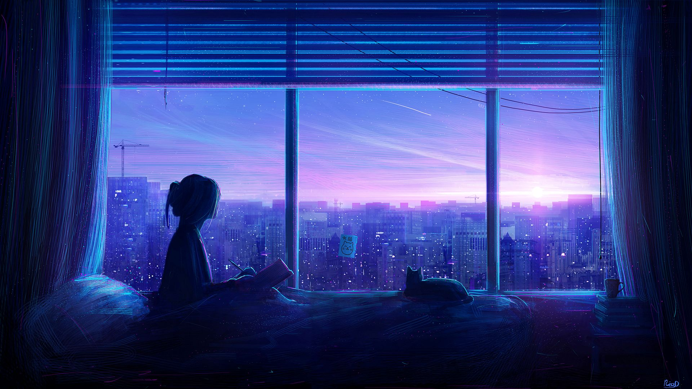
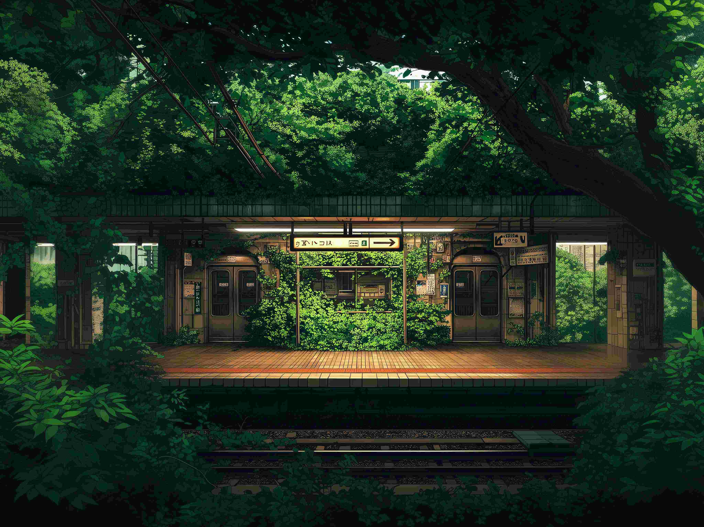

JI LAN YI GOU


由于服务器在线人数长时间=0，所以运维组决定将服务器暂时性关停，节省运营所消耗的费用，等到未来再决定再次开机
添加白名单插件，后通过问卷添加用户白名单,问卷(3个问题):1.你的账号为正版账号还是LittleSkin账号(离线账号无法进入服务器，无正版账号请使用LittleSkin账号登入)2.你的游戏内名字为？3.你的QQ号为？
零岚忆构成立于2025年12月1日，是一个致力于创意与技术融合的工作室，我们专注于数字艺术、交互设计与创意开发。